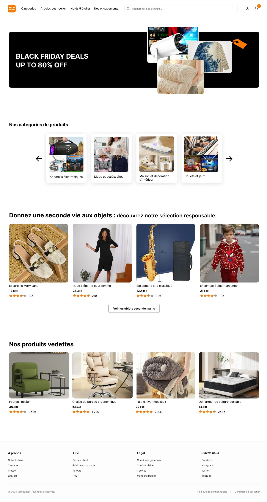
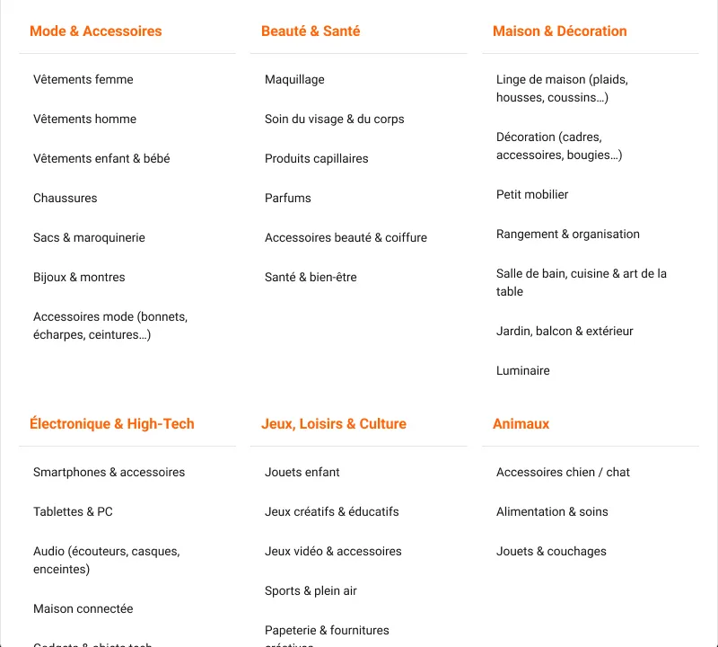
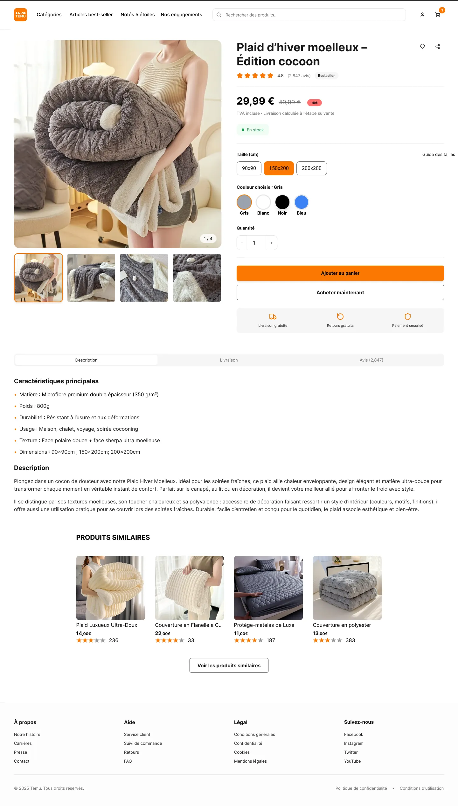
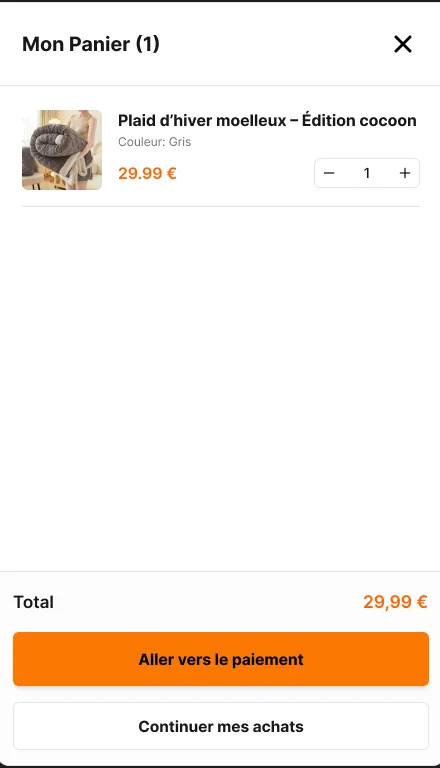
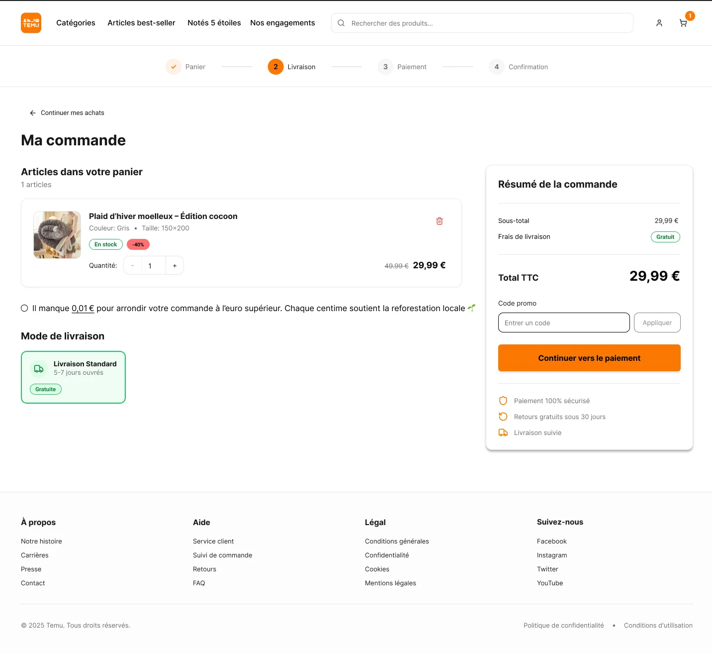
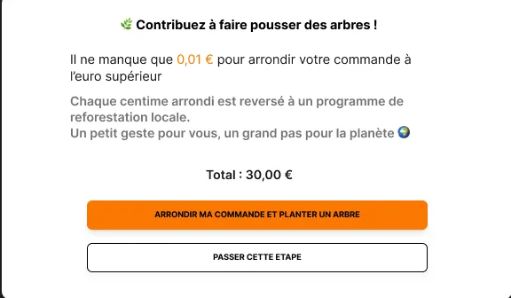
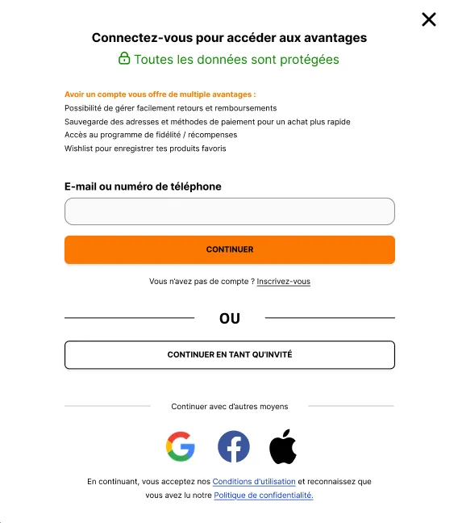

Repenser un géant de l'e-commerce pour allier accessibilité, éthique et durabilité, sans renoncer à ce qui fait son succès.
Voir le prototype
Temu séduit par ses prix, mais son modèle soulève de vraies limites environnementales, sociales et éthiques. Nous avons audité le parcours d'achat actuel sous trois angles : l'éco-conception, l'accessibilité et l'éthique commerciale.
EcoIndex de la page d'accueil (note G). 6,3 Mo par page, plus de 3 500 éléments et 311 requêtes serveur, là où la cible est de 1 Mo, 600 éléments et 40 requêtes.
Score d'accessibilité AIM. 45 problèmes de contraste, 60 alertes et un site qui devient difficile à utiliser zoomé à 200 %.
Note Trustpilot sur plus de 43 000 avis. Délais de livraison, produits non conformes, publicités jugées mensongères : la confiance est entamée.
| Étape | Problème constaté | Type | Impact principal |
|---|---|---|---|
| Accueil | Bombardement d'informations (promos, livraison gratuite, vendeur vedette, Black Friday) | UX · Écologie | Surcharge cognitive et visuelle, incitation à l'achat |
| Accueil | Informations non structurées, prix et promotions mis en avant | UX · Accessibilité | Lecture difficile, perte de repères |
| Accueil | Couleurs très vives, mal perçues par les personnes daltoniennes ou DYS | Accessibilité | Illisibilité, exclusion d'une partie des utilisateurs |
| Accueil | Temps de chargement global trop long | Écologie · Performance | Expérience ralentie, empreinte carbone accrue |
| Produit | Absence d'informations sur la durabilité et l'origine des produits | Éthique · Écologie | Manque de transparence, choix non éclairé |
| Produit | Impossible de revenir en arrière (ouvre une nouvelle fenêtre) | UX · Technique | Rupture du parcours, frustration |
| Panier | Pop-up imposant un minimum d'achat de 20 € | Dark pattern | Incitation abusive à augmenter le panier |
| Panier | Multiplication d'étapes et de boutons secondaires | UX | Parcours confus, perte de confiance |
| Global | Scroll infini et images partout, sur toutes les pages | UX · Écologie | Achat impulsif, consommation de ressources |
Extrait de notre grille d'analyse (FigJam).
Plutôt que d'ajouter des fonctionnalités, nous avons retiré ce qui pousse à l'achat impulsif et remis l'utilisateur en contrôle. Chaque décision de la refonte répond à l'un de ces piliers.
Réduire les impacts dès la conception : pages plus légères, moins d'images, fin du scroll infini.
Transparence sur les produits, promotions informatives plutôt que persuasives, aucun dark pattern.
Concevoir pour tous les handicaps (daltonisme, cécité, mobilité réduite) et viser la conformité RGAA / WCAG.
Concevoir pour tous les publics, quels que soient le genre, l'origine ou la couleur de peau.
Nous avons redessiné tout le parcours d'achat, de l'accueil à la confirmation de commande.
Redonner de la respiration à la page : fini la succession de produits sans lien, place à une sélection claire et raisonnée et à des catégories mieux hiérarchisées.
Faites défiler la capture pour voir toute la page.

Au survol de « Catégories », toutes les catégories s'affichent de manière simple et lisible.
Nous avons supprimé les images qui accompagnaient chaque catégorie : elles surchargeaient la page et alourdissaient son chargement.

Une fiche pensée pour une lecture claire et responsable.

Le panier devient un panneau latéral accessible à tout moment depuis le header, pour consulter ses articles sans quitter la page.
Il se ferme en un clic grâce à une croix bien visible : une navigation plus fluide et moins intrusive que sur le site actuel, où le panier occupe une partie de l'écran sans pouvoir être masqué.

Une interface épurée, centrée sur l'essentiel : prix, livraison et quantité.
Un bouton d'arrondi solidaire permet de compléter le total à l'euro supérieur, la différence étant reversée à un projet de reforestation locale. Discret et non intrusif, il laisse à l'utilisateur le choix libre d'y participer.


Nous avons ajouté la possibilité de continuer en tant qu'invité : acheter sans créer de compte, pour respecter la liberté et les préférences de chacun.
Le paiement reste une page épurée, utilisable aussi bien à la souris qu'au clavier, notamment pour les personnes en situation de handicap moteur. La confirmation d'achat se limite ensuite à l'essentiel, sans suggestions ni publicités.
Des objectifs, pas des résultats mesurés : le projet s'arrête au prototype. Ils donnent la direction et la façon de la suivre.
Viser une réduction de 15 % de l'empreinte carbone grâce à des pages plus légères et moins de requêtes.
Se différencier par une image RSE forte, avec un objectif de +20 % d'engagement client et une meilleure fidélisation.
Score EcoIndex, satisfaction Trustpilot, taux de rétention et score RSE.